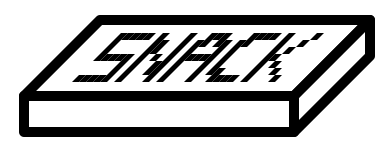

Testing terms
Snack is in development. Use it with accounts, content and systems you are authorized to control.
Testing status
Snack is currently a private development project with internal testing. This public site provides information and optional Condiment examples; it does not provide general access to a finished desktop product. Features, connection availability and storage formats can change. Keep independent backups of content you need.
Your connections
You choose which accounts to connect, which email senders are allowed, and which controls an integration may use. Follow the relevant provider’s terms and account policies. Provider restrictions, availability and verification requirements may affect a connection. Disconnect or revoke access when you no longer want a connection to operate.
Commands and results
Commands can change your workspace or connected resources within their current permissions. Review command results and verify consequential outcomes. A completed action means the action returned successfully; provider acceptance of an email does not prove recipient delivery or reading.
Third-party additions
Condiments are independently installed extensions. Review each extension’s source, requested controls, publisher and applicable license or terms. Listing an example does not require you to install it. This information page does not grant a license to unpublished Snack code or replace the licenses included with individual Condiments.
Contact
For testing questions, connection problems or privacy requests, contact anticontainment.system@gmail.com. See the privacy policy for current email data handling.